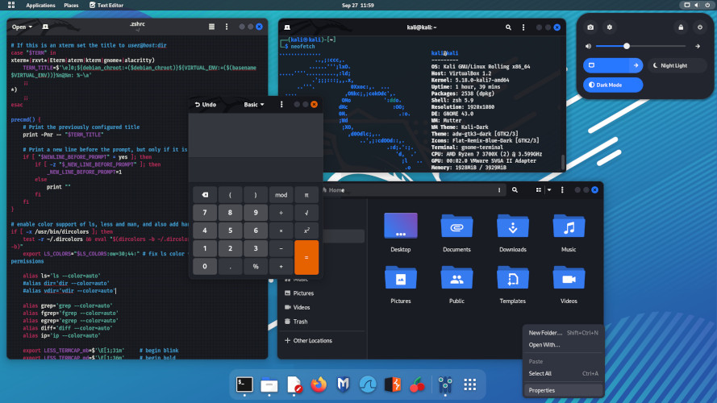

VMware
is a virtualization and cloud computing software provider based in Palo Alto, Calif. Founded in 1998, VMware is a subsidiary of Dell Technologies. EMC Corporation originally acquired VMware in 2004; EMC was later acquired by Dell Technologies in 2016. VMware bases its virtualization technologies on its bare-metal hypervisor ESX/ESXi in x86 architecture.
Kali Linux
Kali Linux (formerly known as BackTrack Linux) is an open-source, Debian-based Linux distribution aimed at advanced Penetration Testing and Security Auditing. It does this by providing common tools, configurations, and automations which allows the user to focus on the task that needs to be completed, not the surrounding activity.
Kali Linux contains industry specific modifications as well as several hundred tools targeted towards various Information Security tasks, such as Penetration Testing, Security Research, Computer Forensics, Reverse Engineering, Vulnerability Management and Red Team Testing.
Kali Linux is a multi-platform solution, accessible and freely available to information security professionals and hobbyists.

Kali linux can run inside windows or other os with vmware application